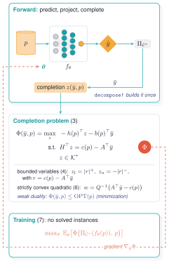

L2ODLL.jl
Dual proxies · Dual completion · Lagrangian bounds
![Dual Lagrangian Learning. Forward: the proxy f_theta maps the parameters p to a predicted dual y-hat; it is projected onto the dual cone, y-bar equals Pi_C-star of y-hat; the completion z of y-bar and p solves the completion problem (3), Phi of y-bar and p equals the maximum over z of minus h of p transpose z minus b of p transpose y-bar, subject to H transpose z equals c of p minus A transpose y-bar and z in the dual cone K-star; closed forms exist for bounded variables (4) and strictly convex quadratic objectives (6); by weak duality Phi is at most OPT of p for minimization. Training (7): maximize the expected Phi over theta, with the gradient of Phi with respect to y-hat returned to theta; no solved instances are needed. decompose! builds the projection, the completion and Phi once from the primal JuMP model.](assets/diagrams/l2odll--dual-completion.svg)

L2ODLL.jl implements Dual Lagrangian Learning (DLL) of Tanneau and Van Hentenryck (2024) for parametric conic and convex quadratic problems modeled in JuMP, with the bounded-variable completions of Klamkin, Tanneau and Van Hentenryck. A proxy predicts some of the dual variables from the parameters; projection onto the dual cone and completion of the remaining dual variables make the result dual feasible, so its dual objective is a bound on the optimal value for every prediction (weak duality) and, being differentiable, the self-supervised training loss.
L2ODLL takes the primal JuMP model, dualizes it with Dualization.jl, detects a decomposition with a closed-form completion and builds the projection, completion, bound and gradient functions automatically.
Installation
L2ODLL is not registered yet. Its optional L2OCore interface (L2ODLL.DLLMethod) comes from the development version of LearningToOptimize.jl; the registered LearningToOptimize 1.0.0 predates it. Install the core subpackage first, then L2ODLL, on any Julia version from 1.10:
import Pkg
Pkg.add(; url = "https://github.com/LearningToOptimize/LearningToOptimize.jl", subdir = "lib/L2OCore")
Pkg.add(; url = "https://github.com/LearningToOptimize/L2ODLL.jl")
Pkg.add("JuMP") # used by every exampleThe examples also use HiGHS and Clarabel: Pkg.add(["HiGHS", "Clarabel"]).
Example
using JuMP, L2ODLL
model = Model()
@variable(model, 0 <= x[1:2] <= 1)
@variable(model, d in MOI.Parameter(1.0)) # parameter: the demand
@constraint(model, balance, x[1] + x[2] == d)
@objective(model, Min, x[1] + 3x[2])
decompose!(model) # detects BoundDecomposition
dual_objective(model, [[2.0]], [1.5]) # 2.0 ≤ OPT(1.5) = 2.5, for any prediction
dual_objective(model, [[3.0]], [1.5]) # 2.5: the optimal price gives the optimum
dual_objective_gradient(model, [[2.0]], [1.5]) # training signal
Y = randn(sum(y_shape(model)), 64) # batch: predictions × instances
P = 1 .+ rand(1, 64) # parameters × instances
bounds, G = dual_objective_and_gradient(model, Y, P)Where to go next
- Theory: the optimization problems, the completions in closed form and their gradients, with equation numbers of the papers.
- Package guide: getting started, concepts, custom decompositions, projections and layers.
- L2OCore interface: using L2ODLL as a method of the LearningToOptimize pipeline; AD and GPU notes.
- Examples: Markowitz portfolio, economic dispatch (training a proxy).
The LearningToOptimize ecosystem
| Package | What it provides |
|---|---|
| LearningToOptimize.jl | the penalty method, Flux training and solver-labeled dataset generation; hosts the two subpackages below |
| ↳ L2OCore | the shared interface: method families, problem wrapper, batched evaluators, datasets |
| ↳ L2OSobolev | derivative (Sobolev) supervision added to any method |
| L2ODLL.jl | Dual Lagrangian Learning: dual proxies that give valid dual bounds for conic problems |
| L2ODC3.jl | DC3: equality completion and inequality correction for primal proxies |
| L2OALM.jl | primal-dual learning with an augmented Lagrangian |